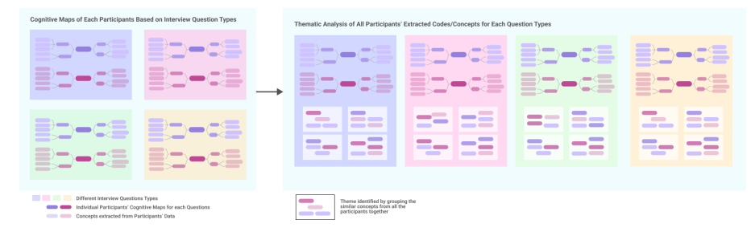

A four-year, research-through-design project that took a human question — how do strangers come to belong online? — through field research, AI-practitioner study, and synthesis, into a library of multi-agent design patterns, then prototyped those patterns as working community interfaces.
Online communities are where millions of people weather crises, form real relationships, and build a sense of belonging with people they may never meet. That belonging isn't automatic — it's produced by labor: members welcome newcomers, check in on each other, amplify each other's creative work, and protect the space from harm.
Generative AI is now entering these spaces. The dominant instinct is to automate — auto-answer the newcomer, auto-generate the art, auto-moderate the conflict. But every one of those acts is also a moment where belonging is made. Automate it away and you may deliver the information faster while quietly removing the human contact that produced connection in the first place.
The design challenge: how can advanced AI be designed to support — rather than displace — the human practices through which belonging is produced? Not "should AI be here," but "what role should it play, and where would that role do more good than harm?"
"How should AI support belonging" is too big to design against directly. I scoped it into three sequential studies, each answering a question the next one needed — moving from human dynamics, to AI-system reality, to a synthesis that bridges the two.
Research-through-design treats the act of designing as a way of producing knowledge. Each study generated insight; the synthesis turned that insight into conceptual design moves — named agent roles with behaviors, instantiations, risks, and diagnostic questions a real team could apply.
Diary study + semi-structured interviews with BTS/ARMY members surfaced the real mechanisms of belonging: onboarding vulnerability, the social cost of disclosing struggle, under-recognized creative labor, and threats to community integrity.
Interviews with AI practitioners building multi-agent systems revealed how they think (org metaphors, "team of experts," "divide & conquer"), two collaboration paradigms (AI-dominant vs AI-assisted), and cross-cutting risks: hallucination, error propagation, the black-box problem.
For each human insight I asked: what agent role does this imply? Role concepts were clustered by the community challenge they addressed, producing nine patterns in four themes — four specified in full depth, each with behaviors, risks, and fit questions.
The AI-practitioner study (Study 2) wasn’t summarized from memory — it was analyzed systematically. For each participant, I built cognitive maps organized by interview-question type, then extracted the concepts embedded in their answers. Across all participants, I grouped semantically similar concepts — question type by question type — into themes, so every theme stays traceable back to the specific participant data it came from.

Why it matters: this two-step pipeline — individual cognitive mapping → cross-participant theming — is what let the synthesis (Study 3) ground each design pattern in evidence rather than impression.
Each pattern names a role an AI agent might play, the belonging challenge it addresses, the coordinated sub-agents that carry it out, and — critically — the risks and diagnostic questions that decide whether it belongs in a given community. A guiding constraint runs through all four: amplify and protect human connection; never substitute for it.
Newcomers need to learn norms and find the right people, but asking basic questions exposes their outsider status. The agent privately learns their goals and bridges them to the people who can welcome them — it never befriends them itself.
Members carry real emotional weight but hesitate to disclose publicly. The agent offers low-pressure, dignity-preserving check-ins with a consent-based escalation model — never therapy, never imposed, always exitable.
Creative work builds belonging but gets drowned out. The agent helps members share and be seen — captions, translation, accessibility, amplification — while boosting signal, not generating content (calibrated to each community's authorship norms).
Belonging needs protection from harm. The agent does quiet boundary work — detecting scams and coordinated harassment, then handing evidence and recommendations to human moderators with a built-in bias check. It supports moderators; it never enforces autonomously.
These four are only part of the picture. This interactive journey map shows how all nine agent patterns — including cross-cutting ones like the Boundary & Integrity Agent and the Identity Mask & Credit Keeper — align to each stage of a member's journey, from newcomer to experienced member. Click through the stages to see which agents are active when.
To pressure-test the patterns as design, not just theory, I vibe-coded each one into a working, deployed app — a realistic community interface that walks through the exact vignette from the research. Open it below, pick an agent, and step through the scenario to watch how the agent works at the margins — private, consent-first, human-in-the-loop.
Every foundational principle from the research is woven directly into the interactive mechanics and visual cards of the live design. Here is exactly how and where each one shows up in the interface:
The nine patterns consolidate into a transferable design blueprint and an operational meta-playbook for community designers, platform architects, and researchers — pairing empirically grounded theory with diagnostic questions that help a team decide which pattern fits, and where automation would do harm. The dissertation makes two theoretical moves and delivers two practical tools.
Re-frames belonging as a dynamic practice that demands creative, infrastructural, and emotional labor from members — so AI should amplify that labor, never automate it.
Names the gap between the human metaphors practitioners design AI with (team, assistant) and the social accountability — empathy, negotiation — that current AI can't actually fulfil.
A transferable set of 9 multi-agent patterns across 4 themes, bridging real community needs with technical multi-agent architectures.
A six-step process for taking patterns from paper to production — diagnosing belonging breakdowns before prescribing any AI intervention.
Diagnostic questions across five belonging dimensions map to the thematic groups — no prior taxonomy knowledge needed.
Compose patterns to fit (e.g. Newcomer Bridge + Boundary Agent); they're designed to be combined.
Re-instantiate per community culture, scale, and risk tolerance — adapt, don't copy.
Decide single-agent vs. multi-agent architecture for the specific community need.
Pre-deployment protocol: opt-out options, pause features, visible human-escalation paths.
Assess failure modes — over-automation, loss of implicit care, power imbalances.
Framing an ambiguous problem space, scoping it into answerable research, synthesizing evidence into a reusable design system of patterns, and translating abstract concepts into concrete, interactive UI — end to end, by one designer.
Move from blueprint to evidence: deploy coordinated patterns in live communities, instrument belonging and trust signals, extend the pattern language beyond fandom (gaming, health, education), and study the longitudinal effects of AI-mediated belonging.